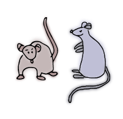

What are the
Best Neighborhoods
in New York
for Rats?
According to James Barron, New York Times journalist, a plague of rats is rebounding from COVID-19. The city’s 311 line had received more than 21,000 calls about rat sightings through last Wednesday, compared with 15,000 in the same period in 2019.

The Department of Health and Mental Hygiene (DOHMH), the data provider for NYC Rodent Inspection, separates inspection results into 4 different categories.
1. Passed
Fulfills the Inpsection guideline

2. Bait Applied
Application of rodenticide bait, or other monitoring visits by a Health Department pest professional.
3. Rat Activity
If a property fails its initial inspection, the Health Department will conduct a follow-up inspection
4. Failed for Another Inspection
Active Rat Signs: Includes any of the following signs:
- Fresh tracks
- Fresh droppings
- Active burrows
- Active runways and rub marks
- Fresh gnawing marks
- Live rats
All the results, except passed, tell that the area is exposed to rats and that it needs to take steps to make life more difficult for rats to live in those environment.
Let’s take a look at this map where the dots represent areas that passed the rodent inspection. The neighborhood with most dots imply that it is less likely to see mice around that area; neighborhood with least amount of dots is where it is comparatively easier to see mice.

(neighborhood name) is the best neighborhood in New York for rats with (#) passed inspection results. In contrast, (neighborhood name) is the worst neighborhood for rats with (#) passed inspections.
Below is the live dashboard that is updated everyday to show the overall status of best and worst neighborhoods.